A Project By Elise Song (eys29) and Katherine Zhou (kz273)
Fall 2023
ECE 5725 Monday Lab Group 6
Our project uses a Raspberry Pi to create a latte machine that can automatically dispense the ingredients for a specified drink. A mug is placed on a rotating platform. The robot uses sensors to tell the mug to stop, and salt shakers attached to a micro servo motor controlled by the Raspberry Pi are used to dispense the powders at the designated locations. There are also pumps used to dispense liquids into the mug.
Elise likes drinking matcha lattes but it’s much too expensive at Gimme. She bought her own matcha powder to make it at home and found it to be pretty simple, though it involves many steps like measuring matcha powder, heating up water and milk, and measuring sugar for sweetness. We wanted to automate the process, allow the user to customize the sweetness level, and apply it to other drinks like coffee lattes and hot cocoa.
The first element in the design was the powder dispensers. Our design used salt shakers with a rotating cover, since the covers could be easily rotated using a micro servo motor. The servo arms were attached to the cover using hot glue. There are three different sized holes on the salt shaker; we decided to use the largest ones. The unused holes were taped off from the inside to prevent powder from going through them.
To test the powder dispenser, we used fine grain sand to act as the ingredients. We followed a guide from youtube to come up with simple code that turns the servo 90 degrees. In the beginning, we taped the servo arms down instead of gluing it, so that we would be able to change the orientation if it was off. We found that just having the servo arms attached to the lid would make the servo body rotate instead of the lid. During testing, we fixed this by holding the servo body in place. In the final design, the servo body was glued to a wooden block to hold it in place.
The next element in the design was the water pumps. We bought simple water pumps from amazon, they turn on and off using a button. We took the pump apart to access the electronics on the inside. The button in the middle turns a motor on and off. To test if the button could be controlled by the Raspberry Pi, we tried to turn it on without clicking the button, which would indicate that the button connects two of the pins of the buttons with a click. We found that either of the two adjacent side pins would turn the button on when connected to each other.
The next step was to solder wires to the two pins so that they could be connected to a relay which would be controlled by the Raspberry Pi. This made the pump controllable by the Raspberry Pi. The soldered pump looks like this:
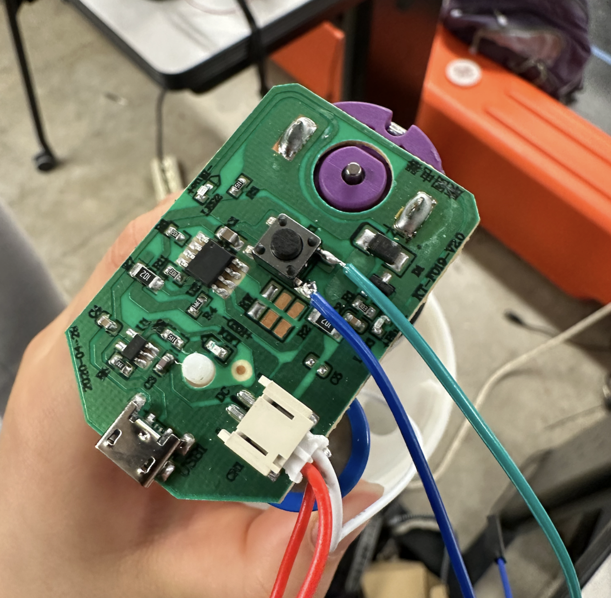We used female-female wires and stripped one end to connect to the pins. The other end could be connected to the pins on the relay.
To control the button using the RPi, we used a relay. A relay uses a coil to flip a switch when it gets an electric current. We built a simple circuit consisting of the Raspberry Pi, a relay, the pump, a BJT transistor, a diode, and a 1kOhm resistor. The circuit was taken from the Raspberry Pi Cookbook.
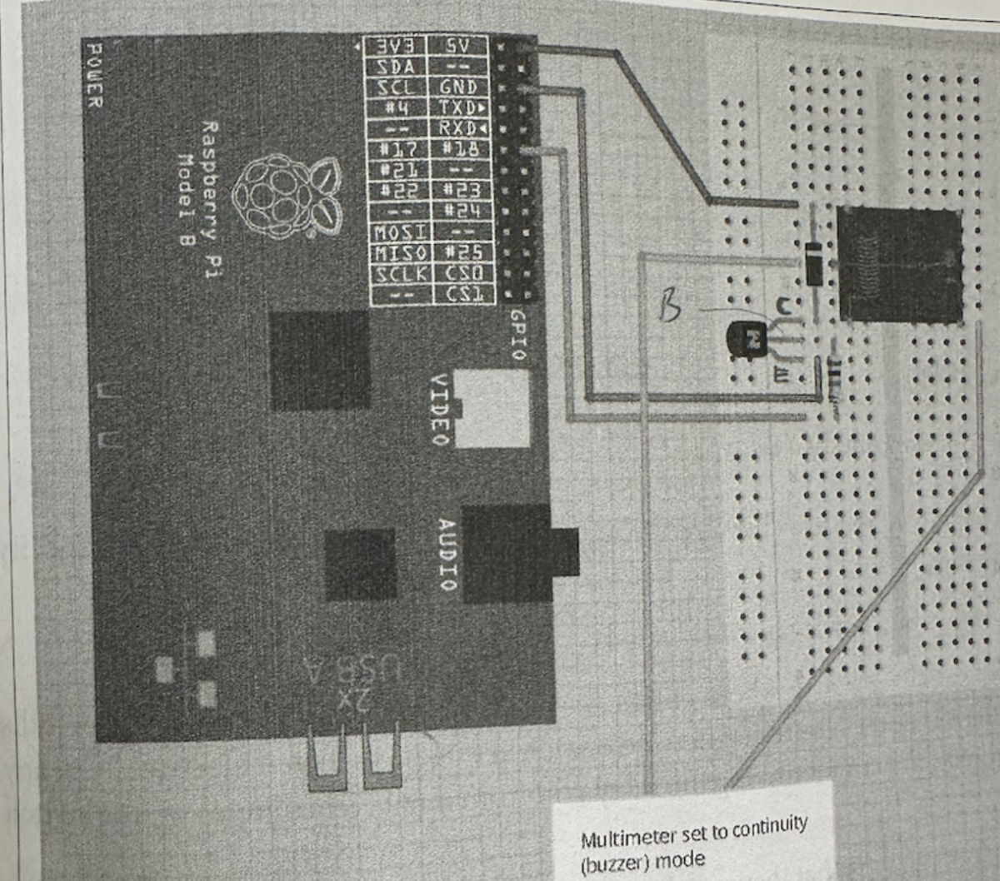We found that we could not plug the relay directly into the breadboard, so we used female-male wires instead. The coil of the relay was connected to the breadboard, and the switch was connected to the pump. The circuit looked like this:
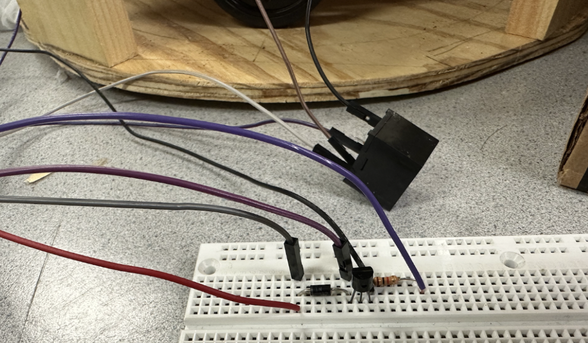The red wire goes to 5V on the Raspberry Pi, the black wire goes to ground, and the purple goes to a GPIO pin. The jumper wires in the breadboard connect to the relay, and the other two relay pins are connected to the pump. When the GPIO pin is driven high, it will flip the switch in the relay, which will then connect the two pins needed on the button to turn the pump on. We used simple code to test the pump functionality, which made sure that everything was soldering properly.
After ensuring that the three main hardware components of the robot were functional, we built the frame of the robot. The frame consists of three circular panels, two of which are the same size, and one which is smaller. The two larger panels are connected via wooden beams, forming a base and a top panel. The smaller panel is the platform that the mug will rotate on to collect ingredients.
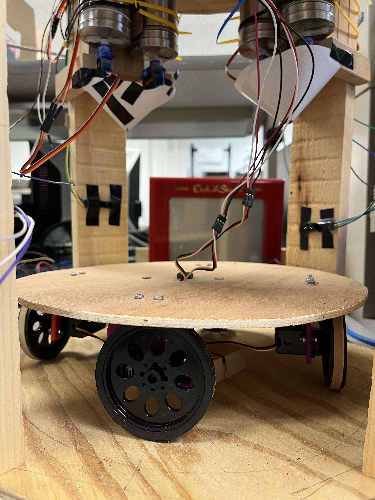A wooden block is attached to the center of the rotating panel to give it height to attach the wheels. A pin is attached to the center to allow the platform to spin in place. We attached four continuous servo motors and wheels to the platform. Two of the wheels are idle and provide balance. The other two motors and wheels move the platform. The wires of the idle motors are taped to the motor body so they do not get in the way or get tangled while the platform is moving.
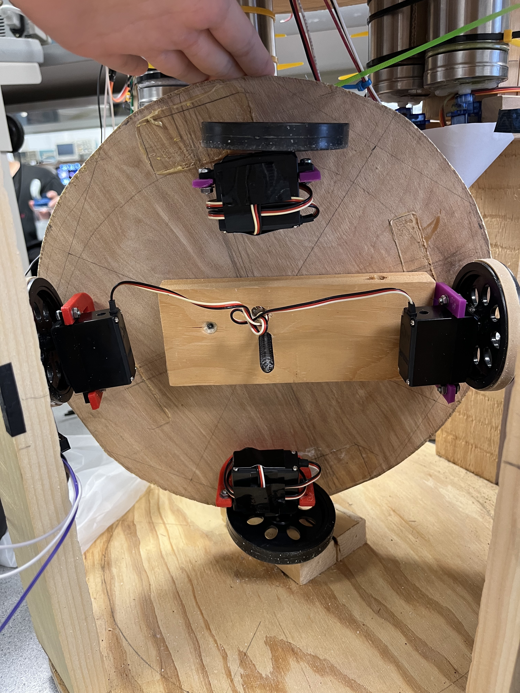Originally, we did not have rubber bands on the wheels, but during testing we realized that there was not enough friction on the wheels, so they did not move while they spun. Adding the rubber bands fixed that problem.
A hole was drilled near the center of the bottom platform, and on the top platform, to allow the motor wires to go through and connect to our breadboard, which sits on the top platform.
Next, we wanted to add sensors to the frame on the planks that connect the top and bottom. The idea was that when the sensor was tripped by the mug, the platform would stop moving so the ingredients could dispense into the mug. Originally, we intended to use two beam break sensors. However, we realized that that would not work due to the motor wires coming from the bottom; the wires would trip the sensor.
We switched from a beam break sensor to a reflective sensor. We used the Pololu Carrier with Sharp GP2Y0D805Z0F Digital Distance Sensor 5cm, which can sense objects at a maximum distance of 5cm. We soldered the sensor to the carrier, and soldered header pins to the carrier as well. Before attaching the sensor to the frame, we tested it to make sure it worked.
Now, we could put all the parts together. The powder dispensers were zip tied to the wooden planks, with two smaller planks padding it to move them closer to the center. The micro servos were attached to a small wood plank so that they would stay in place.
We used four powder dispensers in total to dispense four ingredients: matcha powder, instant coffee powder, hot cocoa powder, and sugar. The dispensers were grouped in twos, with the area that it dispenses from towards the center. The sensor was positioned so that once the mug stopped, both of the powder dispensers at that position would be able to dispense into the mug. The setup of the dispensers and the sensors is shown below.
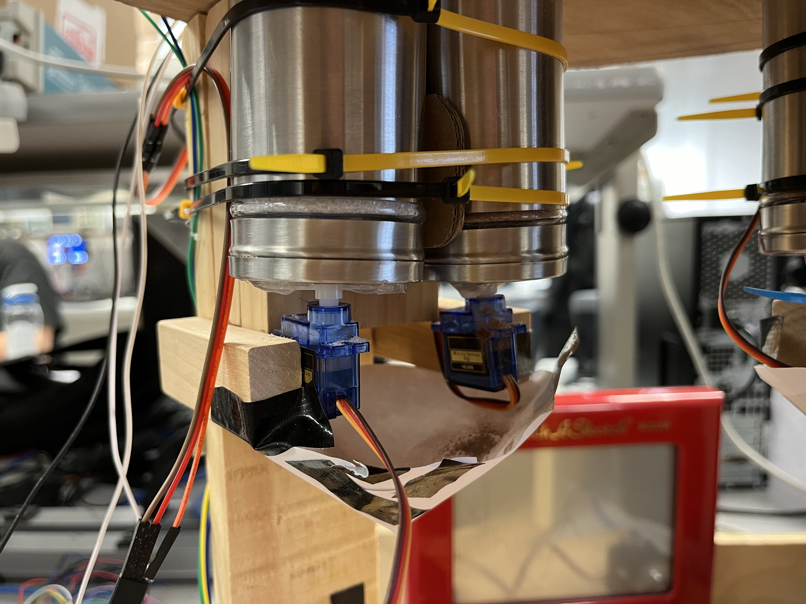We added a funnel so that the powders would come down in a more centralized position. This is discussed further in the hardware errors section.
The position of the water pumps was difficult to work out. We decided to use a cardboard box with two holes punched out to use as a base platform for the pumps. The holes were there so that the tube could go through it into a water tank or water bottle that would be inside the box. The full setup is shown below.
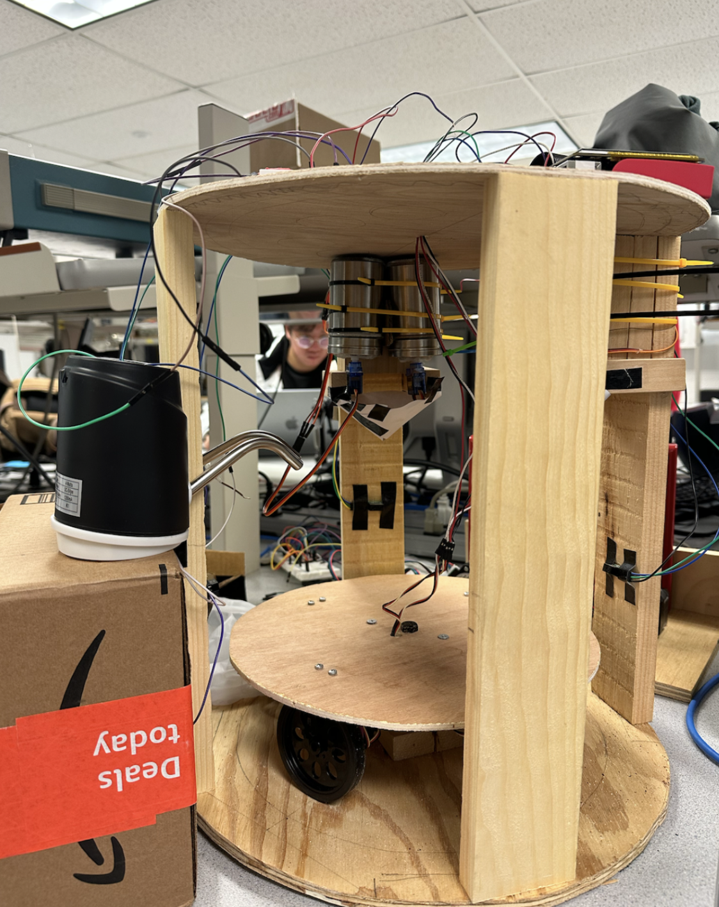Our Software Design was composed of four parts: hardware commands, graphics helpers, an FSM for the GUI, and overall execution. The hardware commands read and set GPIO input and outputs for each hardware component, including servo motors, sensors, and the liquid pump. The graphics helpers allowed us to use Pygame easily for the GUI display. The FSM defined the GUI and when to call the hardware commands. Then the FSM was executed on startup of the RPi. We employed modularity through classes and helper functions to organize the code. Because Pygame doesn’t allow importing code from other files, organization was very important in our design.
The powder dispensing was powered by servo motors connected to the rotating covers of the salt shakers. The servo motor changes its angle using ChangeDutyCycle(). ChangeDutyCycle(2) rotated the servo by 90 degrees and ChangeDutyCycle(7) rotated it back 90 degrees. We connected the salt shakers to GPIOs in the following way: Matcha-5, Coffee-6, Cocoa-19, and Sugar-26. Each salt shaker had a dispense function that called ChangeDutyCycle on the correct GPIO. The coffee salt shaker servo malfunctioned a bit by not rotating back a full 90 degrees and required different values for ChangeDutyCycle(), 3 and 12 for open and closed positions, respectively. We found the duration for the salt shaker to dispense 1 teaspoon of powder to be 1 second. We also wanted to dispense different amounts of sugar depending on user input for sweetness level. Thus, the dispenseSugar() function took an integer argument i between 1-4 and the duration was determined by i*.1. Testing for the salt shakers involved finding how long to open the shaker, and finding the correct angles for the servo for the open and closed positions.
The pump turned on/off with a button press which corresponds to a HIGH, LOW, HIGH, LOW signal as pressing/releasing the button is HIGH, LOW. Thus, the pump() command turned the pump on by sending a HIGH followed by a LOW signal to GPIO 16. We tested how long the pump needed to be on to fill a mug with water and reached a duration of 13 seconds. Again, the pump is turned off by a HIGH, LOW signal. The pump did not require much testing as it worked on the first try and we only needed to determine the duration it should be on.
The wheels of the rotating base were driven by continuous servo motors controlled through pulse width modulation (PWM). The two wheels were connected to GPIO 12 and 13. From the Parallax Continuous Servo Datasheet, the motors had to be calibrated to not move at a 1.5 ms high pulse over a duration of 20 ms which is a duty cycle of 1.5/20=7.5%. The motors were calibrated through adjusting a screw on the motor. After calibration, the motors turned clockwise with a 1.3 ms high pulse over 20 ms (duty cycle=6.5%) and counterclockwise with a 1.7 ms high pulse over 20 ms (duty cycle=8.5%). We made a clockwise function (go_cw()) and a counterclockwise function (go_ccw()) that called start() with the corresponding duty cycle and set the frequency to 50 using ChangeFrequency() to both motors. A stop() function called stop on both motors. Testing included calibrating the motors and ensuring the duty cycle values corresponded to the correct clockwise/counterclockwise direction.
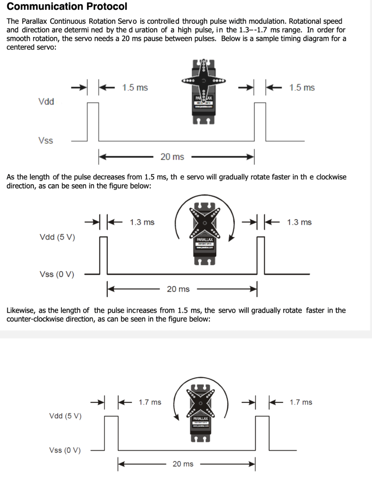For the sensors, we first setup GPIOs 20, 21, and 17 as inputs. If the sensor detected an object within 5 cm, the input reads as 1 and 0 if there is no object. In a while loop, the program polls for the sensor detection. Each sensor required a previousState to detect a change on the input: if the previousState == 1 and the input == 0, then an object is detected. And the previousState is set to current input in a while loop. Testing involved figuring out the values of the input, and ensuring the detection code with previousState worked as expected.
The powder dispensing, pump, wheels and sensors were all combined in one function called makeLatte() that rotates a mug on the base, senses the mug under the specified powder dispensers, dispenses the powder, senses the mug under the pump, and pumps water into the mug. Testing each hardware integration individually first helped with easy consolidation. The makeLatte() function takes arguments matcha, coffee, cocoa, and sugar where 1 indicates a dispense action. For sugar, the argument ranged from 1-4 corresponding to how much sugar to dispense. An array called previousState defines the previous states for each of the three sensors. The senseStop array is set to 1 when a specific sensor is triggered. The done array is also set to 1 for a specific sensor, so the mug is only detected once per sensor. Initially, the function calls go_ccw() for the base to rotate counterclockwise. In a while loop, the sensors are polled. If the sensors are triggered, senseStop is set. For the first two sensors, if senseStop is True and the powder arguments corressponding to the sensor are True, the base stops and the correct powders are dispensed using their functions. Then, done is set to 1 and the base rotates counterclockwise. For the third sensor, if senseStop is True, the base stops and the pump() function is called. It sets the while condition to False to exit the loop. The base goes counterclockwise for 1 second to return the mug to the beginning position and stops.
We implemented a class called Text that created all the required Pygame components to display a text box at a certain position. The Text class used the font “quicksandlight” and calculated the size of the box containing a given text with the helper function calculateTextBox(). It also included a helper function called buttonHit() that returned true if the given click position was within the text box. Other helper functions like draw() drew the text itself and drawButton() drew a rect behind it if it was a button. This simplified the FSM by initializing Text objects for every text component and calling the draw(), drawButton(), and buttonHit() functions in each state. The Text class was tested by initializing Text objects and making sure they were displaying properly in the Pygame window, and buttonHit() returned True when the button was clicked.
There are five FSM states: START, FLAVOR, SWEET, MAKE, and DONE. We created five draw helper functions that draw the necessary Text boxes for each state: drawStart(), drawFlavor(), drawSweet(), and animate() (for the MAKE state). The FSM operates under a while loop so the draw functions draw one frame, and poll for input for state transitions.
In the START state, the drawStart() function is called to draw a frame with a welcome message and a “START” button. The program polls for a touch to the “START” button. When the button is pressed, the state is set to FLAVOR
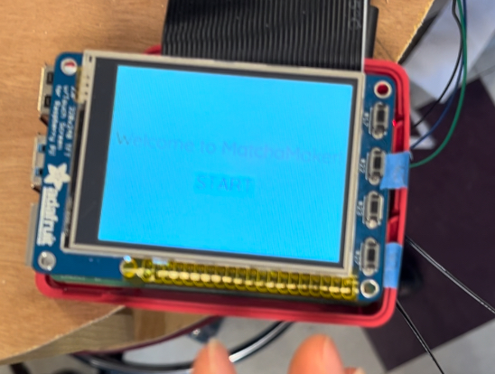In the FLAVOR state, drawFlavor() draws a frame prompting the user to choose a latte flavor of Matcha, Coffee, or Hot Cocoa. The program polls for a touch to one of the three buttons on the screen, stores which button was pressed to a global variable, and sets the state to SWEET.
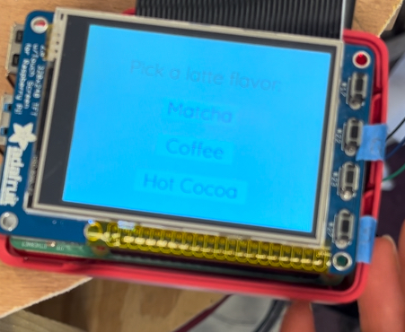In the SWEET state, drawSweet() draws a frame prompting the user to choose a sweetness level: 0%, 25%, 50%, 75%, or 100%. Again, the program polls for a touch to one of the buttons on the screen, and stores which sweetness level was picked to a global variable. The state is set to MAKE.
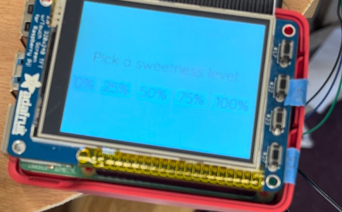In the MAKE state, two threads are created, one calling the makeLatte() function and the other calling the animate() function that draws an animation on the screen until makeLatte() is finished. The arguments to makeLatte() were the global variables set in the FLAVOR and SWEET states. In order to communicate between threads and let animate() know that makeLatte() is finished, we made use of threading Events. An Event e is given as an argument to both functions and is cleared at the beginning of makeLatte() and set at the end. When the Event is set, e.isSet() returns True. The animate() function runs a while loop on the condition ( not e.isSet()), so when e is set, the while loop terminates. The while loop cycles through frames of a gif and displays it to the screen.
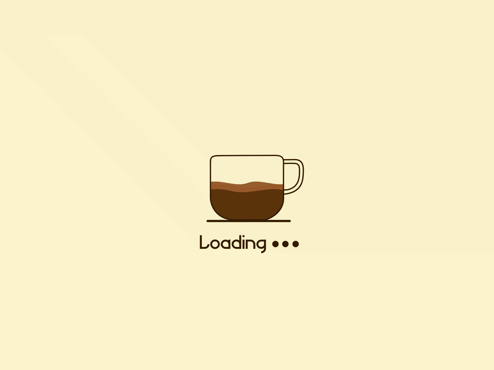The program calls .start() on the two threads, then .join() to wait for the threads to finish. Finally the state is set to DONE. In the DONE state, the state is simply set back to START. We created this state in case we wanted to do something after the latte was made but did not end up implementing anything.
The FSM was tested through user testing: pressing the buttons and making sure the display and the next state was correct.
The while loop for the FSM runs on the condition dontquit which is only set True when the quit button on the RPi is pressed. The quit button is tied to GPIO22 and we created a callback function when the button press event is detected.
We additionally created a shutdown button on the RPi tied to GPIO27. It uses a callback function on detection of the button press. The RPi is shutdown by making a call to os.system('sudo shutdown -h now'). The buttons were tested by pressing the buttons at various stages of the FSM.
Finally, to execute the program on startup, we used the .bashrc method to start the program automatically once the system reboots. We added a call to matcha.py in /home.pi.bashrc and tested it by rebooting the system. We also configured the RPi to start without login.
The first attempt at soldering wires to the pump failed for a couple reasons. The wires were stripped too much, so there was a lot of metal still showing outside of the solder. To prevent the wires from touching any electric parts under it, we covered the area under the wires with electrical tape. However, this did not account for the wires crossing and touching each other. During the soldering process, the battery was unplugged so it would not accidentally turn on while soldering. It was not plugged in again after the soldering job. We believe that at some point, while the battery was unplugged, the wires crossed and turned the pump “on”, and it was never turned off. The end result was that it fried the first pump, and it would not turn on even when just using the button. Thankfully, we had backup pumps to use. On the second pump, we made sure to have less of the wire stripped so that there would be no danger of the wires crossing again. The second soldering attempt was successful and the pump functioned as expected.
Our first attempt at using the sensor failed due to a poor soldering job. The header pins were loose, so the power, ground, and output pins were not secure to the carrier. Additionally, the solder of a few of the pins on the sensor were touching. After resoldering, it worked much better.
Our original design used two pumps, one for water and one for milk, so we had two relays. During our original round of testing the circuit on a separate breadboard, it worked as expected. Afterwards, we moved that circuit and another one, for the second relay, to the main breadboard. Neither circuit was working. We found that we had connected the diodes in the wrong direction. This fixed one of the circuits but not the other. To debug, we moved the second circuit onto a separate breadboard in the same configuration as it was in before, using the same GPIO pin. The circuit worked on the separate breadboard. When we tried to move it back to the main breadboard, it didn’t work. In the end, we decided to keep the second relay circuit on the separate breadboard. It is possible that the main breadboard had a dead zone where we were trying to put the circuit.
During testing, we noticed that the servo motors connected to the wheels were shaky and not moving smoothly, even after calibration. We found that the 6V battery pack we were using was no longer at 6V, so the wheels were not getting a consistent power source. Switching to using the power supply to power the servos fixed this problem.
Once we put the robot together, the “final” test revealed that the powders would not actually fall out of the salt shakers. This was because of the consistency of the matcha power and the instant coffee powder. We had not attached the hot cocoa powder or the sugar to the frame yet, and tested those separately before attaching them. The hot cocoa powder also had some trouble coming out, but the sugar had no issues. We decided to try to change the consistency of the powders by adding sugar to them. While this does not make for the healthiest drinks, adding enough sugar to the powders did change the consistency enough for the powders to fall down on their own.
After the sugar was mixed into the powder, the powders were able to dispense, but there were occasions where they would miss the mug. This was because we hand tune the time that the mug travels after the sensor is tripped, so depending on the servos and the power, the actual distance can vary. To fix this problem, we added a funnel below the dispensers to help center the powder flow to be over the mug.
The preferred method for executing the program on startup involves making a call to a shell script in crontab. When we tried this method, the program would not start on reboot. We tried sudo crontab but that did not work either. We resorted to using the .bashrc method.
We had trouble with the GUI displaying on the piTFT screen. When connected to a monitor, the GUI displayed which we used during the majority of testing. We tried moved the display to the piTFT using these four lines:
os.putenv('SDL_VIDEODRIVER', 'fbcon') # Display on piTFT
os.putenv('SDL_FBDEV', '/dev/fb0') #
os.putenv('SDL_MOUSEDRV', 'TSLIB') # Track mouse clicks on piTFT
os.putenv('SDL_MOUSEDEV', '/dev/input/touchscreen')
The piTFT screen only displayed black but if we pressed the quit button, the welcome screen would flash for a second and then the program exited. We tried to debug this by checking /dev/fb* but it continued to not work. Professor Skovira suggested checking past lab code to see if it was an issue with the screen itself or the code. Past code displayed on the screen with no problem so it was an isolated issue with the code. We checked if we could just display the GUI code in a separate file which worked. We realized that getting rid of import statements of code in other files finally displayed the GUI on the piTFT screen without issue. We imported code to help with modularity but had to combine it all in one file.
When compared to our original project outline, we were able to meet all of our goals:
Our incremental approach to designing the LattePi allowed us to debug issues as they came up instead of all at once in the end, resulting in a successful integration of all our parts.
With the base continually turning clockwise, the wires connecting the wheel motors to the RPi get tangled after multiple rotations. Instead, the base can return the mug to the beginning position by rotating clockwise after the latte is made.
Currently, the only ways to refill the powder dispensers are to either cut the zip ties and take down the dispensers, or to unwire the robot and flip it upside down. Both of these options are terribly inconvenient. Ideally, a second model would have holes cut out on the top platform where the dispensers are to create a lid, where the powders could be easily refilled from. This would also require us to get different dispensers, since we would also need to cut off the bottom of them. The dispensers we are currently using are made of glass, so this is not currently possible.
In this model, we hand tuned the amount of time for the mug to travel after the sensor is tripped so that the mug ends up where the funnel is and the powder dispenses cleanly into the mug. A better solution would be to add a second sensor on each plank so that there is a sensor on either side. The first sensor would first sense the leading edge of the mug and both sensors would be used in combination to center the mug between the two sensors.
Because the funnels were a last minute addition to our design, they were made using paper. This caused them to be irregularly shaped and not centered between the dispensers. Ideally, we could 3D-print funnels. That way, we would be able to specify the dimensions of the funnels so they would be the same size, and we could ensure that the opening is centered. Additionally, this would be better for sanitary reasons, the funnel could be removed and cleaned as needed.
Currently, the drinks made do not taste great, due to them using too little powder and too much water. For a second iteration of LattePi, we can significantly increase the time for which the powders are dispensed so that the drinks are more flavorful. We also believe the drinks will taste better when using milk instead of water.
Throughout the project, we met up together to work on various components. The work for this project was primarily split between hardware and software, where Katherine handled hardware and Elise handled software. The frame building was done together.
eys29@cornell.edu
Designed the overall software architecture and created this website.
kz273@cornell.edu
Built circuits and and managed hardware components.
Parallax Continuous Rotation Servo (#900-00008) datasheet (on Canvas)
RaspberryPi4 datasheet (on Canvas)
GIF animation